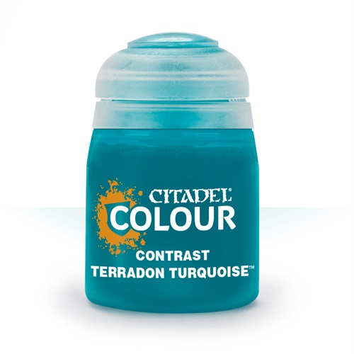

Contrast: Terradon Turquoise (18ml)
Краткое описание товара:
Краска акриловая. Серия "Contrast" Цвет "Terradon Turquoise"
Описание товара:
Краска серии Contrast подойдет как для начинающих, так и для опытных художников.
Основное преимущество этой серии - сочетание в себе свой сразу нескольких серий красок: base,layer и shade, что позволит значительно сэкономить время при росписи миниатюр в основные цвета.
Основное преимущество этой серии - сочетание в себе свой сразу нескольких серий красок: base,layer и shade, что позволит значительно сэкономить время при росписи миниатюр в основные цвета.
Характеристики
-
Основные характеристики:
Оттенок Голубой, Синий Назначение Для работы кистью Основа водная -
Дополнительная информация:
Производитель Games Workshop (UK) Серия Citadel Contrast Артикул 29-43